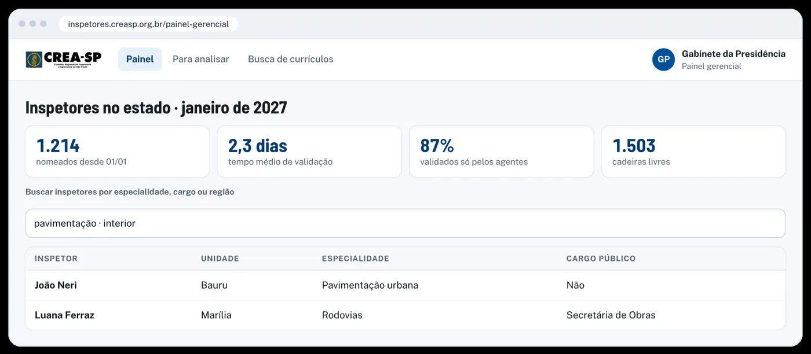
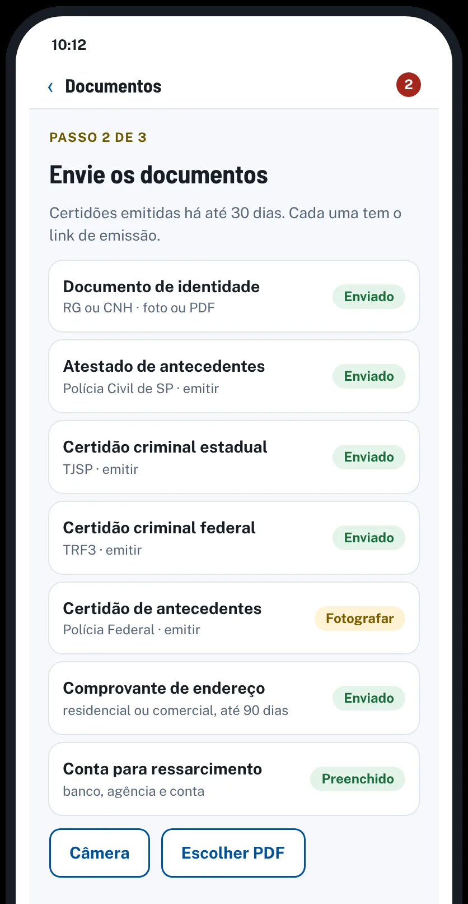
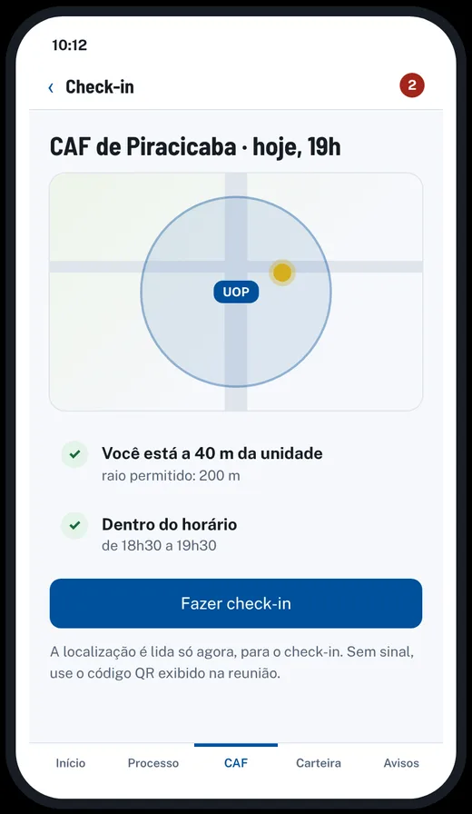

PortfólioSistemas de gestão e plataformas
Da indicação à posse, sem planilha e sem e-mail
O Crea-SP tem cerca de 2.600 inspetores em 194 unidades. A indicação de cada um passava por planilha, e-mail, conferência manual em três ou quatro sistemas, certidões checadas uma a uma e um dossiê montado à mão. A plataforma leva o processo inteiro para a web e o celular, confere os requisitos na fonte e entrega o dossiê pronto para o processo eletrônico.
- Instituição
- Crea-SP
- Entrega
- Web, aplicativo iOS e Android, banco e integrações
- Regras
- Regulamento das Inspetorias 2026
- Assinatura
- gov.br
Telas
Como ficou
Protótipo navegável, com dados fictícios.


Painel gerencial e painel de vagas da regional. Nomes e números fictícios do protótipo.
No celular
O indicado resolve tudo pelo aplicativo
Envio de documentos com link de emissão de cada certidão, e check-in de presença na reunião pelo GPS ou por QR quando não há sinal.


Fluxo
Sete fases, um processo
Vaga e indicação
A regional vê as cadeiras livres e as cotas, e indica pelo sistema.
Pré-validação
Pelo CPF, o sistema confere registro, débitos e impedimentos antes de seguir.
Documentos
O indicado envia pelo celular; cada certidão é conferida na fonte oficial.
Análise
Fila do Gabinete com o resumo do currículo e os sinais de atenção.
Assinaturas
Formulário, termo de posse e declarações assinados com gov.br.
Dossiê
PDF único com todos os documentos e o histórico, pronto para o processo eletrônico.
Mandato
Reuniões, presença, faltas, justificativas, regularidade mensal e encerramento.
Engenharia
Construído para ser auditado
- Regra no banco, não na telaToda gravação passa por funções do banco, e todas as 82 tabelas têm regra de acesso por linha.
- Regras de negócio testadasO regulamento virou um pacote de domínio com testes automatizados.
- Integração simulada e realCada integração tem versão simulada para desenvolver e testar sem depender do sistema externo.
- Acessibilidade conferidaTestes de ponta a ponta e auditoria de acessibilidade em 6 larguras de tela, nos temas claro e escuro.
- Migrações versionadas32 migrações aplicadas só pelo pipeline, nunca à mão.
- Documentação completa13 documentos: contexto, especificação, interface, arquitetura, testes e decisões técnicas.
Tecnologias
Continue vendo